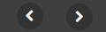

Timeline plugin
The purpose of this plugin is to represent all the timecoded metadata on a timeline. This plugin is composed of two parts. At the top, the time axis where you can navigate and zoom in the timeline. You may use either the appropriate buttons or the mouse
Below the time axis, all the timelines are displayed. For a given media, we can display as many timelines as desired, each of which may be linked to a different source of metadata displayed with a specific type of line. For the moment, we have three type of lines :
- cuepoint: to visualize simple temporal points (
localisationwith atcfield) - segment: to visualize temporal segment (
localisationwithtcinandtcoutfields) - image: to visualize simple temporal points with images
(
localisationwithtcandthumbfields)
The timeline is synchronized with the player, a progress bar indicates the current position in the media and a click on any object represented in the timeline will seek in the media at the correct timecode.
The player and the timeline plugin are in two separate
div
in your HTML. Again, each of these
div
must have an
id
that will be referenced in the player initialization javascript code. Below is a simple example. The
timeline plugin is not necessarily just below the player. It's up to you to set the
div
at the correct place.
<div id="myplayer-timeline-container">
<div style="height: 350px;">
<div id="myplayer-timeline"></div>
</div>
<div id="myplayer-timeline-timeline" style="height: 265px;"></div>
<div style="clear: both;"></div>
</div>
Timeline control buttons
On the time axis, you will find the following control buttons :
|  | slide left and right on the time axis (same as click and drag) |

|
zoom in and out (same as mouse scroll), change the timelines height |
On each line, depending on the initialization parameters, you may find the following control buttons :

|
go to previous / next timecoded element |
| collapse / expand the line, change the line order in the list (click and drag to move the line up or down) |
In the following example, we create a player and load metadata blocks from three different sources. We add the timeline plugin with three lines. Each one of these lines is bound to a different metadata block of a specific type.
Timeline plugin options:
| Options | Type | Description | |
|---|---|---|---|
| listOfLines | Array | Configuration of all the lines, contains an array of items | |
| displayLines | Number | Number of lines to display (default : 3) | |
| timeaxis | Boolean | Whether to display the time axis or not (default : true) | |
| resizable | Number | allow the user to resize the timeline and collapse/expand the time axis (default : false) | |
| timecursor | Boolean | Display or not the time cursor (default : true) | |
| nbZoomLevel | Number | (default : 3) | |
| zoomCoef | Array | (default : [1 / 4, 1 / 16, 1 / 64, 1 / 256]) | |
| zoomProperty | Array | (default : tclevel) | |
| displayState | Array | (default : "") | |
| viewZoomSync | Boolean | (default : tclevel) | |
| viewZoomSyncOffset | Number | (default : tclevel) | |
| timeaxisExpandable | Boolean | (default : false) | |
| editingMode | Boolean | (default : false) | |
| thumbRootDirectory | String | Thumbnail root directory | |
| thumbDirectory | String | Thumbnail directory, it override by line configuration. | |
| lineDisplayMode | String | Line display mode: - STATIC : use for line configuration with parameters. - DYNAMIC : use for line configuration with dynamic binding data type (see metadata data type). - STATIC_DYNAMIC : use for line configuration with parameters and binding with data type. |
Default value: STATIC |
Then, for each line, you have the following main parameters available :
| Options | Type | Description | |
|---|---|---|---|
| metadataId | String | ||
| type | String | cuepoint, segment or image | |
| controlBarClassName | String | ||
| title | Number | Label of this line | |
| color | String | Color of items (default : #FFF) | |
| icon | String | Icon representing items, to be choosen in the Font Awesome list (default : circle) | |
| pointNav | Boolean | Display navigation option on this line (default : false) | |
| zoomable | Boolean | Sets wheter this line zoom level is synchronized with the time axis or not (default : true) | |
| zoomHierarchies | Boolean | Enable the hierarchical zoom. | |
| overlap | Boolean | Enable overlap mode. | |
| withParentLevel | Boolean | ||
| focusable | Boolean | Enable focus component. | |
| toolsbar | Boolean | Enable tools bar. | |
| editable | Boolean | Enable edit mode. | |
| viewZoom | Boolean | ||
| timecursor | Boolean | Enable line cursor. | |
| thumbDirectory | Boolean | Thumbnail directory for that line. | |
| callback | String | callback function when user selected line | |
| callbackStyle | String | Set css class name for callback button |
Example
$("#myplayer-timeline").mediaPlayer({
autoplay : false,
src : "samples-data/examples/vid/amalia01.mp4",
plugins: {
dataServices: [
'samples-data/examples/json/amalia01-events.json',
'samples-data/examples/json/amalia01-kf.json',
'samples-data/examples/json/amalia01-ball.json'
],
list: [
{
'className': 'fr.ina.amalia.player.plugins.TimelinePlugin',
'container': '#myplayer-timeline-timeline',
'parameters': {
listOfLines: [
{
title: 'Events',
type: 'cuepoint',
metadataId: 'events-amalia01',
color: '#3CF',
pointNav: true
},
{
title: 'Ball moving up',
type: 'segment',
metadataId: 'ball-amalia01',
color: '#F00'
},
{
title: 'Keyframes every 2s',
type: 'image',
metadataId: 'kf-amalia01',
pointNav: true
},
]
}
}
]
}
});